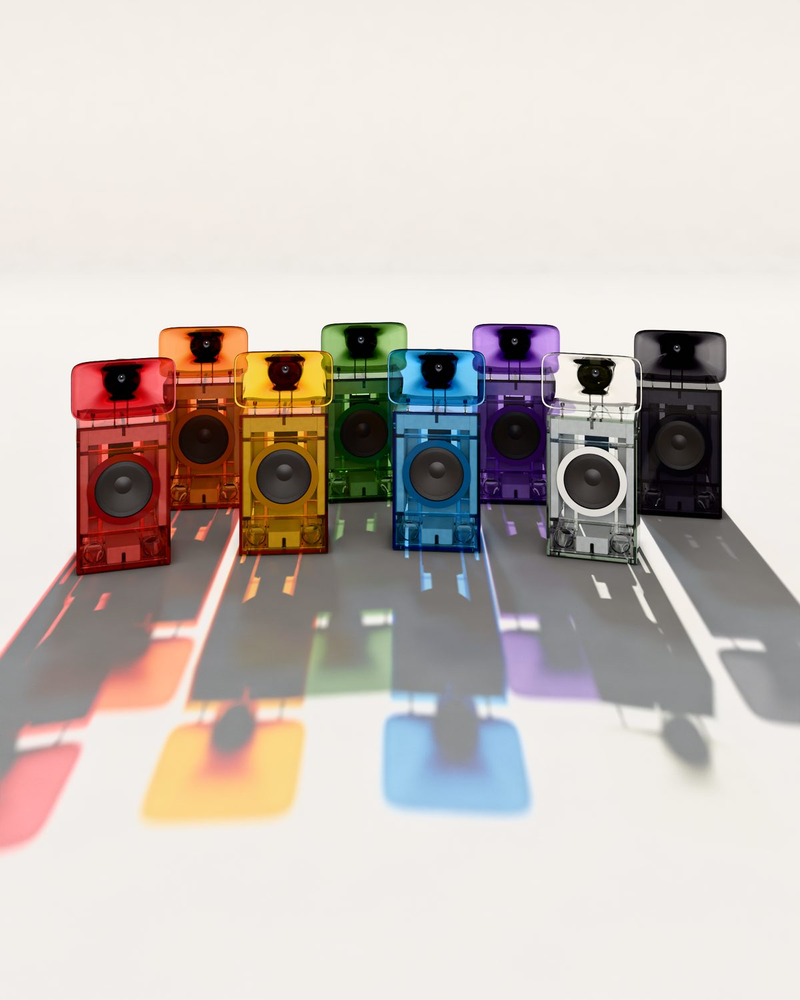
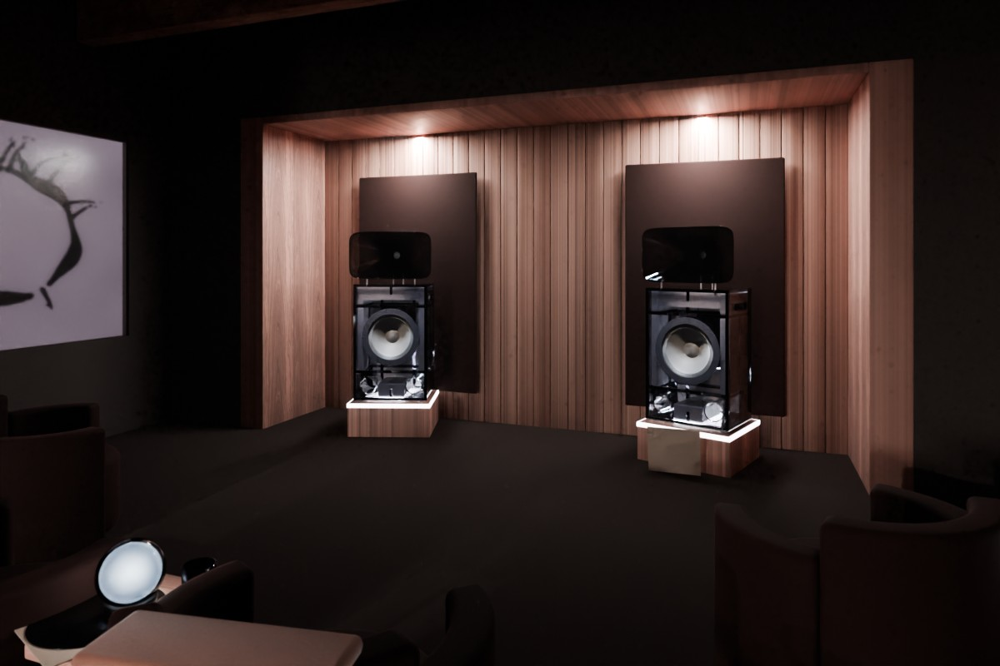
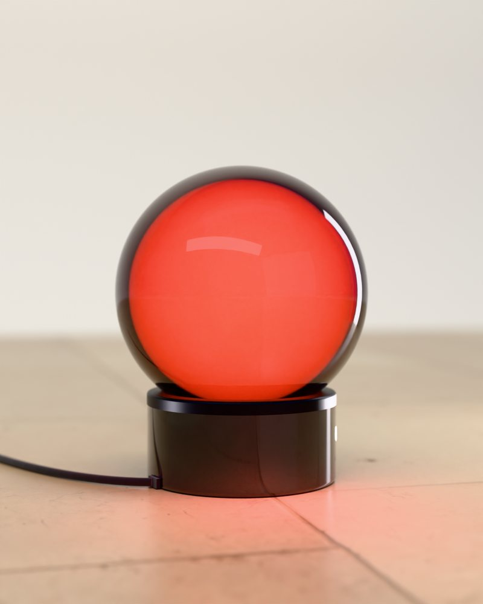
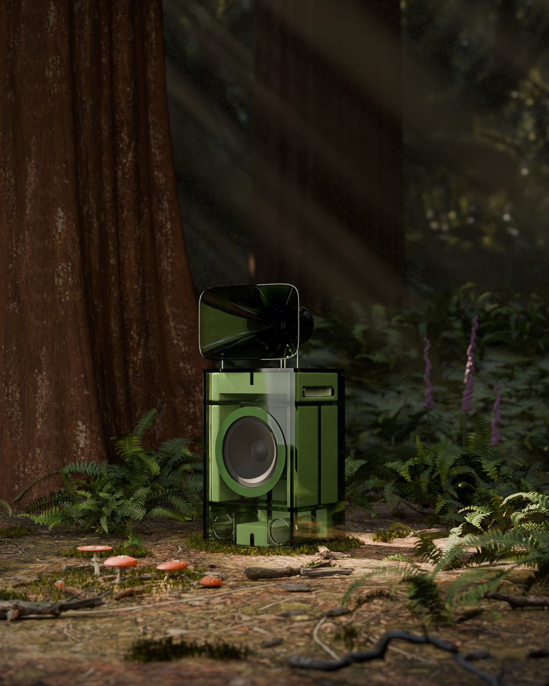

Tropos · the eightSomething in the air.
 9
9
Tropos · the eight9 Mantle · record player
Mantle · record player
 8
8 Tropos · the horn
7
Tropos · the horn
7
The Session · [date], 8 pmStand-in · render6
Core · table lamp5 At the doorStand-in · render
4
At the doorStand-in · render
4 Two 20 mm walls, cemented
3
Two 20 mm walls, cemented
3
04 · Poison2 [Photograph from the night]Stand-in · render
1
[Photograph from the night]Stand-in · render
1